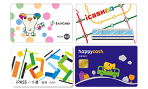

乘車方式
- 單程票
- 電子票證
- 旅遊票
- 定期票
- 其他票種

說到台灣的首都絕對不會不知道是台北，這個充滿現代感的城市融合了日本殖民時期遺留的街巷、繁忙的購物商街及當代風格的建築。台北市為一個盆地地形，蘊藏了綠化休閒、人文藝術、歷史古蹟文化等等內涵；台北市花為杜鵑花、市鳥為台灣藍鵲、市樹為榕樹。
包含單程票及敬老愛心優惠票，提供搭乘一次性之民眾購買。車票限發售當日有效，逾期作廢
包含悠遊卡、一卡通、愛金卡及有錢卡等4種電子票證，票卡可重複加值使用，可用在搭乘大眾運輸工具及小額消費等，民眾可依需求選擇適合之車票。
包含臺北捷運車票(含一日票及24/48/72小時票)、北北基好玩卡(含交通暢遊版、無限暢遊版、景點暢遊版、經典景點版、高鐵假期及高鐵聯票)，提供民眾依需求選購。
可設定公共運輸定期票之載具為悠遊卡及悠遊付，雙北全區使用30日，於票卡有效期間內可不限次數搭乘臺北捷運、淡海輕軌、臺北市聯營公車及新北市市區公車（僅限段次計費路線，不含里程收費公車），並可享臺北市及新北市YouBike站點借車前30分鐘免費優惠(須先註冊)，每次搭乘限一人使用。
包含活動次數票、攜帶自行車單程票、團體票及優惠套票(含高鐵及桃捷)，提供民眾依需求選購。
台北捷運外觀除了環狀線外其他車廂 銀色底藍色拉線
環狀線車廂 白色底白色相間
(相似:高雄-真愛碼頭 香港-旺角)
西門町早期以電影院為最主要的商業活動，當時的電影院大多環繞於峨嵋街、成都路與西寧南路上，故也是西門町發展的中心，民國38年（西元1949年）國民政府遷台後，大量資金湧入此處，除了電影院外，百貨業及其他娛樂場所相繼出現，中華商場完工之後，西門町儼然已成全國最大的商業娛樂中心。民國80年代，臺北的商業娛樂活動逐漸轉移東區，再加上中華商場的拆除與道路整頓，西門町著實沉寂了好一陣子；一直到捷運板南線完工，中華路在臺北市政府的規劃之下，搖身一變成為臺北的香榭大道，不僅如此，大小廣場與活動空間如雨後春筍般地成長，每到週末假日，人群聚集在此從事文藝或運動、音樂表演等的活動，再度把商機與人潮又拉回了西區。現今的西門町不但見證了歷史，還是新一代流行文化的帶領者，許多懷舊的中老年人在此回味往事，更有打扮新潮的年輕一代在這裡爭奇鬥豔，兩種完全不同的生活型態在此交流，滿足了不同需要的族群。
(相似:高雄-高雄國際機場 香港-香港機場站)
松山機場站，是臺北捷運文湖線（內湖線）上的一座捷運車站，位於臺北市松山區松山機場航站大廈前，第一、第二停車場下方，也是捷運系統與臺北松山機場進行連結的主要樞紐。此外民生汐止線亦有繞道至此站的提案。本站與同屬內湖線的大直站為台北捷運第一批設有全罩式月台門的地下車站。
(相似: 香港-九龍站)
台北101/世貿站位於台灣台北市信義區，興雅地區南端，為台北捷運淡水信義線（信義線）的捷運車站。本站為台北捷運第一個雙站名車站，亦是首個名稱中帶有阿拉伯數字及標點符號的車站。在開通之前，南港軟體園區站是全台名稱最長的車站。本站位於信義路五段西村里與景新里交界處、莊敬路至市府路口一帶，位於興雅南端，接近三張犁北緣的位置；因台北世界貿易中心即位於車站西北側，以及台北市地標建築台北101也位在車站東北側而得名，車站編號為R03。與市政府站及象山站擔任信義計畫區的重要聯外捷運站。本站原定名「世貿中心」，2011年7月22日臺北市政府捷運工程局更名為臺北101/世貿站，惟其站名中使用的是正體寫法的「臺」字，與台北101正式註冊及對外宣傳使用之「台北101」不符，也與通車多年的台北車站、台北橋站、台大醫院站、台電大樓站有異等原因，遂更為「台北101」。2018年夏季台北捷運於部分車站新增日本語到站廣播，台北101/世貿站以「台北いちまるいち・世界貿易センター 」廣播。
(相似:高雄-左營站 香港-黃大仙站)
龍山寺站，副站名艋舺商圈，位於台灣台北市萬華區，是台北捷運板南線（板橋線）的捷運車站。本站雖未與臺鐵萬華車站共構，但兩者位置十分接近，路程距離約250公尺，可於出口2往南步行經大理街到底左轉西園路一段203巷往東至萬華車站西站入口站外轉乘。
本站位於新光路上，所在位置為坡內坑頭廷魁，過去曾因地圖標音誤植而登上新聞版面。原本主要服務台北市立動物園的聯外與遊客疏運服務，後來亦服務深坑、國立政治大學、貓空等地的居民。在貓空纜車設立後，觀光人潮大增，纜車站位於捷運站之西南側。木柵機廠則位於本站東側延伸軌。未來臺北捷運環狀線（南環段）車站規劃於現址與貓空纜車動物園站之中間位置興建，未來由環狀線穿堂層透過兩座電扶梯可轉乘文湖線大廳層。而新北捷運深坑輕軌車站規劃在景美溪側人行道上興建，並評估月台層相連，以便轉乘文湖線。
本站最早設立於日治時期，原為臺灣總督府交通局鐵道部淡水線車站，戰後由臺灣鐵路管理局接手營運，後因改建捷運淡水線停止營運。本站往紅樹林站方向為高架段至地面段之過渡帶。現今站體位於中正東路南側，與中山路、中正路的交叉路口東側。站名取自現有地名及原站名「淡水」，鄰近著名的淡水老街。車站編號的部分，淡水信義線為R28，未來的淡海輕軌為V21。站體設計融入台灣閩南式、紅毛城殖民建築元素，牆面呈現紅磚牆之意象，車站屋頂則與其他多數淡水線高架車站一樣採用中國北方宮殿式風格。地面大廳曾設小園林，種了棕櫚樹，設置高低不一的階梯和花槽，但到2015年已經夷為平地。2018年夏季台北捷運於部分車站新增日本語到站廣播，淡水站之到站廣播為「終点、淡水駅です 」。